GitHub项⽬⽹站
制作简明教程
使⽤GitHub来制作项⽬⽹站的简明教程
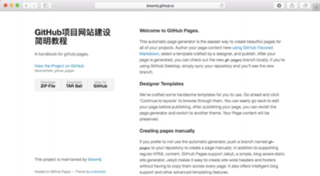
Li Jun,Southwest Jiaotong University
初版
建⽴项⽬ 3
登录 3
建⽴项⽬ 3
⽣成⽹站 5
设置 5
⽣成 5
编辑⽹站 6
⽹址是什么 7
如何在本地编辑 8
同步 9
建⽴项⽬
GitHub是⽤来进⾏项⽬管理的，本教程⽬的是介绍如何建⽴项⽬⽹站，所以前提就是应建
⽴⼀个项⽬。
登录
⾸先你需要拥有⼀个github的帐号，然后登录。登陆后的界⾯如下。在右上⾓的➕ 符号那
⾥，点击，可以看到 New repository链接，点击进⼊项⽬添加页⾯。
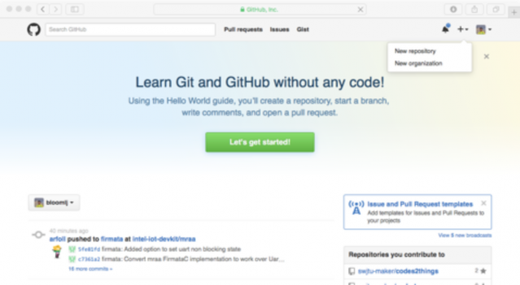
建⽴项⽬
在项⽬建⽴界⾯（见下图），你将看到⼀个表单。填写项⽬名、项⽬简介、版权信息、
Readme⽂档等选项，填写完毕，点击按钮Create Repository，⼀个项⽬建⽴完毕。
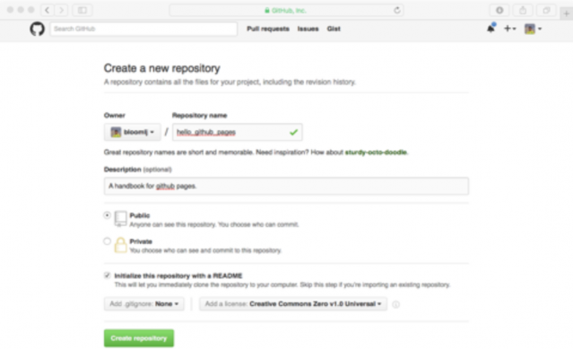
项⽬建⽴成功后，将⾃动跳转⾄项⽬⾸页，如下图。
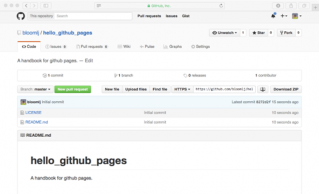
2
⽣成⽹站
⽣成⽹站⽅法很多，本⽂介绍最简单的⼀种，使⽤Automatic page generator来⾃动⽣成⽹
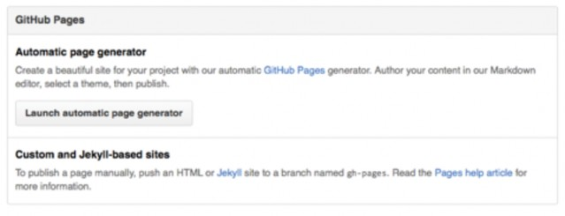
站。
设置
在上⼀章末未界⾯——项⽬⾸页⾥，点击Settings，出现设置界⾯。在设置界⾯中，可以找 到GitHub Pages有关的功能模块。如下图：
这⾥有两种选项，我们使⽤较为简单的Automatic page generator。
⽣成
点击Launch Automatic page generator ，启动⽹站⽣成器。
⾸先第⼀步出现的界⾯是⽹站的内容设置界⾯，修改，填写⽹站标题，副标题，基本信息 等内容。然后下⼀步：Continue to layout。
然后，选择Layout，当然选择⼀个最适合的外观和布局。选择完毕，点击Publish page，发 布你的⽹站。
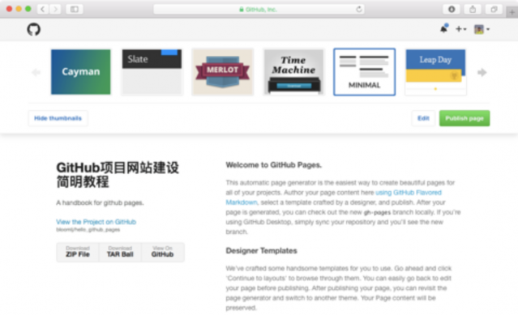
编辑⽹站
⽹站⽣成后，通常都需要各种各样的修改和编辑。使⽤GitHub Pages⽣成的⽹页的所有内 容都是编辑、掌控的。
发布完成以后，重新回到项⽬⾸页。此时点击分⽀按钮，会发现多了⼀个gh-pages Branch，没错，这个就是⽹站⼦项⽬的分⽀。点选，进⼊这⼀分⽀。
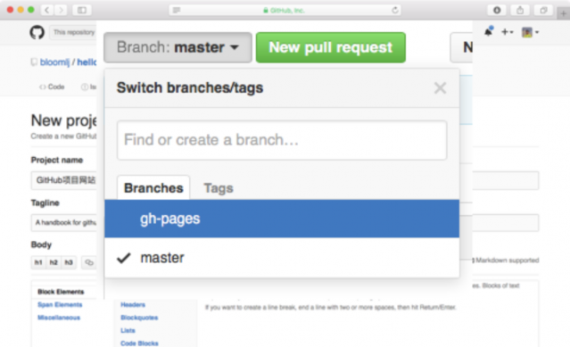
然后可以观察到gh-pages分⽀的⽂件⽬录结构，这个就是⽹站的内容了。如果你有⽹站开
发的经验，已经迫不及待的准备开⼯了。不过别急，咱们还要解决⼏个问题。
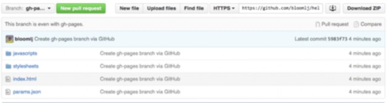
⽹址是什么
没错，当你⽣成⽹站之后，⾸先遇到的问题⼤概就是我该如何访问呢？我们需要⼀个⽹址。
再次打开Settings，此时GitHub Pages模块提⽰，⽹站已经发布在：http:// xx~!@!$@#!#! ，好吧，这⾥的这个“http://”开头的链接就是本项⽬的⽹站地址了。复制 粘贴到浏览器就可以访问了，还不快收藏⼀下。
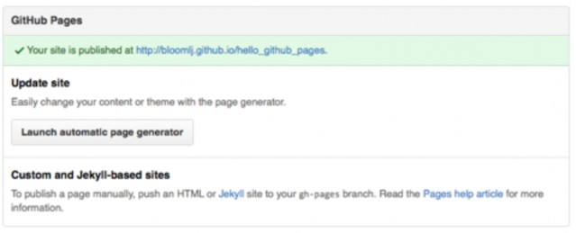
如何在本地编辑
编辑⽹站是个⼗分费⼒的事情，你可能要添加图⽚、增加内容。所以，最好是可以在本地
⽤熟悉的编辑器来编辑这些⽹页。这⾥我们使⽤Github官⽅客户端：GIthub Desktop来帮 助我们完成这⼀⼯作。
⾸先，安装Github Desktop，这个，我们就不多讲了。
然后，打开Gibhub Desktop，登录。点击左侧＋号，然后我们开始clone。
接着，点击Clone hello_github_pages，会提⽰选择本地计算机上的⼀个⽬录，选择我们习 惯的⼀个⼯作⽬录（建议不要有中⽂⽬录名）。然后确定，GitHub Desktop就会⾃动的把 服务上的⽂件下载到你本地的计算机上。Clone完毕，浏览本地，⽬录，怎么没有找到gh- pages ⾥⾯的⽹站⽂件？别急嘛。
继续，回到Github Desktop，此时我们看到的⼤概是下⾯的界⾯。注意左上⾓master那⾥ 是分⽀选择按钮，点击，是不是看到了我们久违的gh-pages，选择gh-pages，然后再到本 地的⼯作⽬录看⼀下？
接着，打开本地⽬录，哦，原来在这⾥。 然后，⽤你最爱的⽂本编辑器打开index.html，编辑⼀下试试？
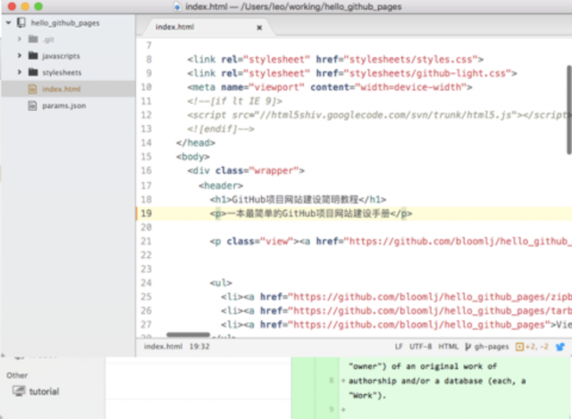
改好了，我们会到Github
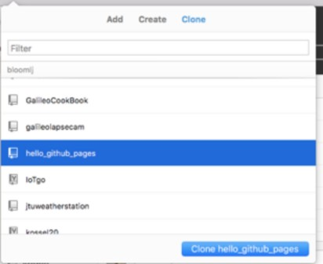
Desktop去看⼀下。发现 1 Uncommitted Change，还有1 Change的⼀个表单。这就是
⼀个简单的Git Commit的提
⽰。我们填写这个表单，并且 点击，Commit to gh-pages， 就可以将最新的修改添加到 Git版本控制系统⾥。好，那 么可以看看改好的效果了。别 急。
同步
完成了本地Commit之后，本 地编辑算是完成了，可是此时如

果访问刚才的项⽬⽹址，会发现还是⽆法看到修改。这⾥涉及到⼀个相对⾼深的Git⼯作流 程的问题。咱还是先跳过，具体的，请随后去看有关教程。
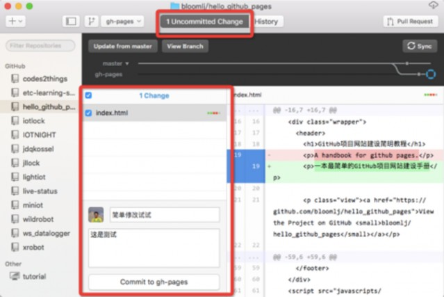
这⾥离成功只有⼀步了，再次回到Github Desktop，看右上⾓，是不是又个⼤⼤的Sync按
钮，点击，⼀个进度条开始启动，⾛到头以后，再次打开浏览器，查看⽹站修改的效果。 什么，还是没看到。服务器在美国，咱能再等1分钟不。
1分钟后。 哇哦，好华丽。⼤功告成。